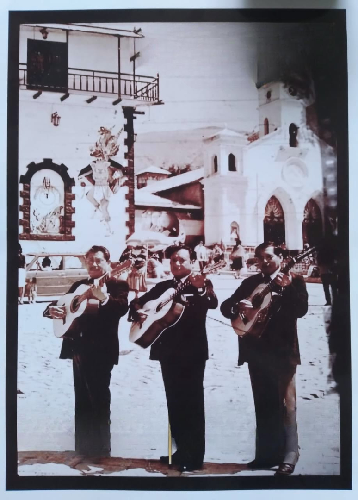
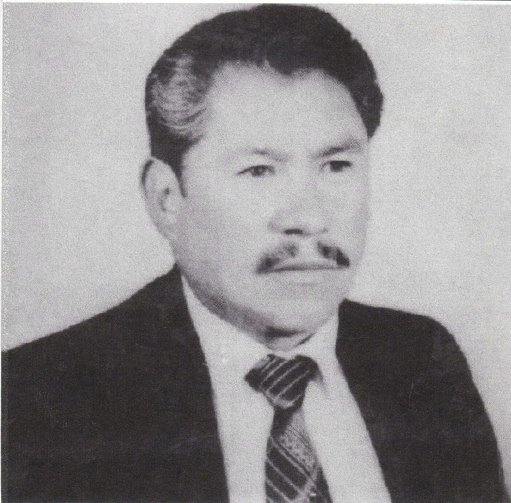
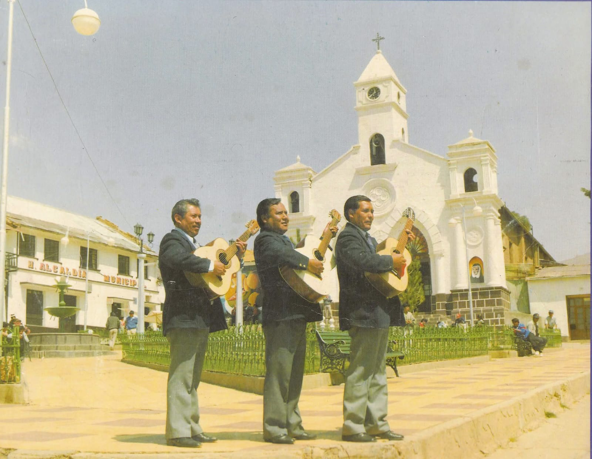

Esto es todo sobre Tres de Uncia

1 Dónde estudié
Comencé en el Kindergarten Litoral, luego en la Unidad Educativa Jaime Mendoza, continué en el Técnico Humanístico Llallagua, y actualmente estudio Ingeniería Informática en la UNSXX.
2 Pasatiempos
Me encanta el volleyball y la música. También disfruto de dibujar y leer.

MARIO BELTRÁN IRUSTA
HIJO DEL DR. ARTURO J. BELTRÁN TRIBEÑO CREADOR DEL COLEGIO DECANO MIXTO "RAFAEL BUSTILLO"...
Saber más
JUAN RUIZ CLAURE
NACIÓ: EN UNCIA EL 30 DE MARZO DE 1945 HIJO DE HONORATO RUIZ ALVARADO Y ANACLETA CLAURE MUÑOS
Saber másGREGORIO MORALES CASTRO
NACIÓ: EN UNCIA EL 25 DE MAYO DE 1950 HIJO DE MAXIMO MORALES MARTINEZ Y EMELIANA CASTRO ACEBEDO
Saber másNuestra Musica
-

Tres de Uncia
NUBE GRIS
-
Tres de Uncia
UNCIA TIERRA LINDA
-
Tres de Uncia
FLOR SIN RETOÑO
-
Tres de Uncia
VIDA DE MI VIDA